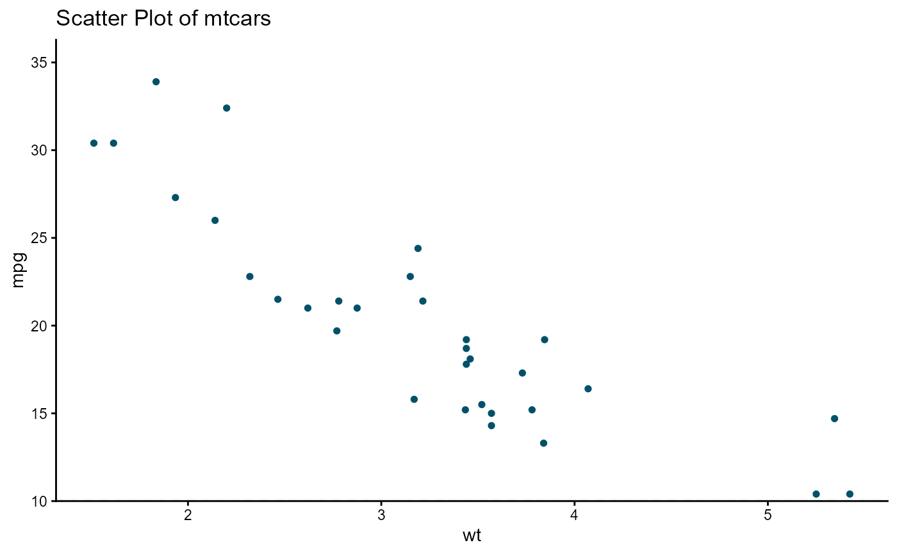

hd_geom_scatter() creates a scatter geometry layer that is added to an
hd() object via +. Use geom_args() to discover available arguments per
geometry, e.g. geom_args("scatter") lists dot_size.
Usage
hd_geom_scatter(...)Arguments
- ...
Geometry-specific arguments forwarded to
hd_make(). ' @return An S3 object of class"hd_geom"for use with+.hd.- dot_size
Numeric. Size of the points in the scatter plot. Default is 4.
Examples
# Basic scatter plot - layered API
hd(mtcars, x = "wt", y = "mpg", backend = "ggplot2") +
hd_geom_scatter() +
hd_opts(title = "Scatter Plot of mtcars")

# Basic scatter plot - declarative API
car <- hd_spec(mtcars, x = "wt", y = "mpg")
opt <- hd_opts(title = "Scatter Plot of mtcars")
hd_make(car, type = "scatter")